Portable Development Environments using Devfiles¶
Introduction¶
In this lab we will explore how we can create portable development environments using CodeReady Workspaces and the concept of devfiles.
The devfiles offer developers a starting point for building applications by offering containerized runtime environments, starting applications with additional functionality built in, and tools to aid in development.
For the lab today we will be using CodeReady Workspaces which is a browser based code editor that runs on OpenShift.
Prereqs¶
- An IBM Cloud Account
- A GitHub account
Using devfiles in CodeRedy Workspaces¶
(Optional) Install CodeReady Workspaces¶
- Navigate to IBM Cloud
- Log in to your account
-
Click on the menu button at the top left of the page, hover over OpenShift and click on Clusters.
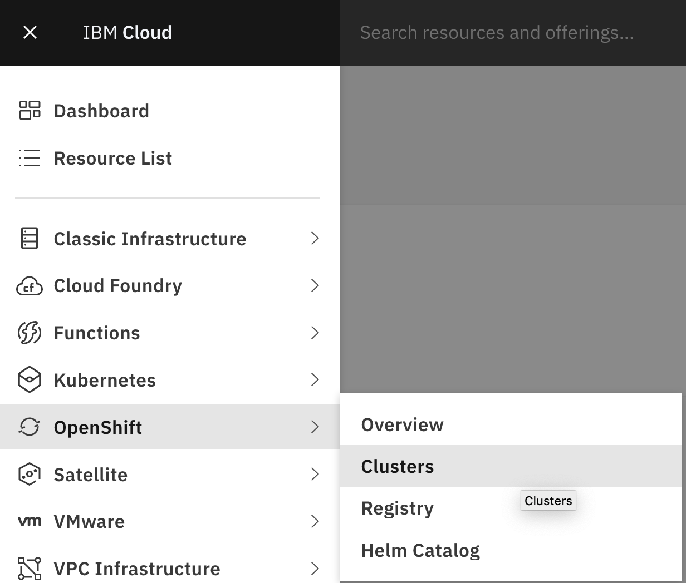
-
There should only be one cluster that shows up for you. Click on it.
-
Then, click on the blue OpenShift Web Console button near the top right of the page.
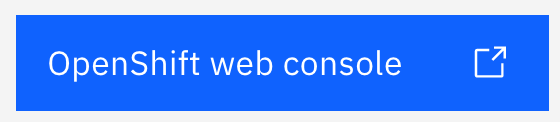
-
The first step is to create a project for us to work in. Click on Projects under the Home section in the left navigation bar.
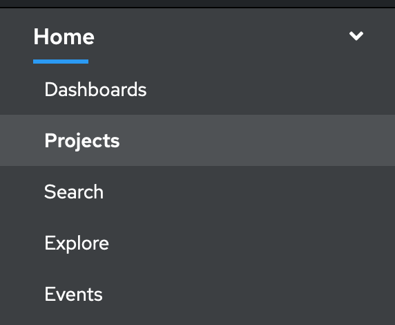
-
Then, click on Create Project
-
In the new dialog window, enter the name devfile-project and click on Create.
-
Now we need to navigate to the Operator Hub to install CodeReady Workspaces. Find the Operators section on the left navigation bar and click on Operator Hub.
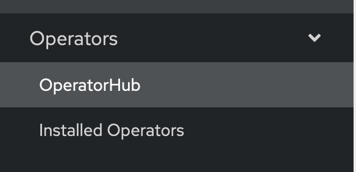
The Operator Hub has a large variety of software available as operators with easy installation and lifecycle management.
-
In the filter by keyword textbox, enter code to filter the operators and show the CodeReady Workspaces operator.
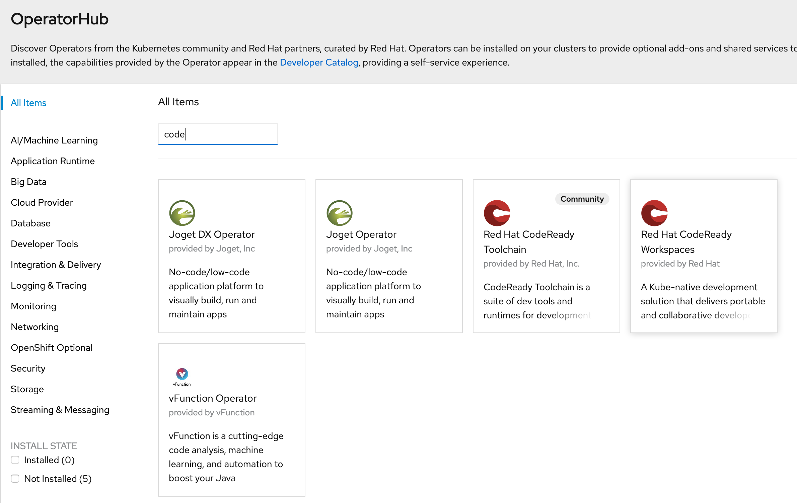
-
Click on the Red Hat CodeReady Workspaces tile and then click on the blue Install button.
-
Ensure that under the Installation Mode you have the A specific namespace on the cluster option selected and devfile-project is selected in the dropdown. Then click Subscribe.
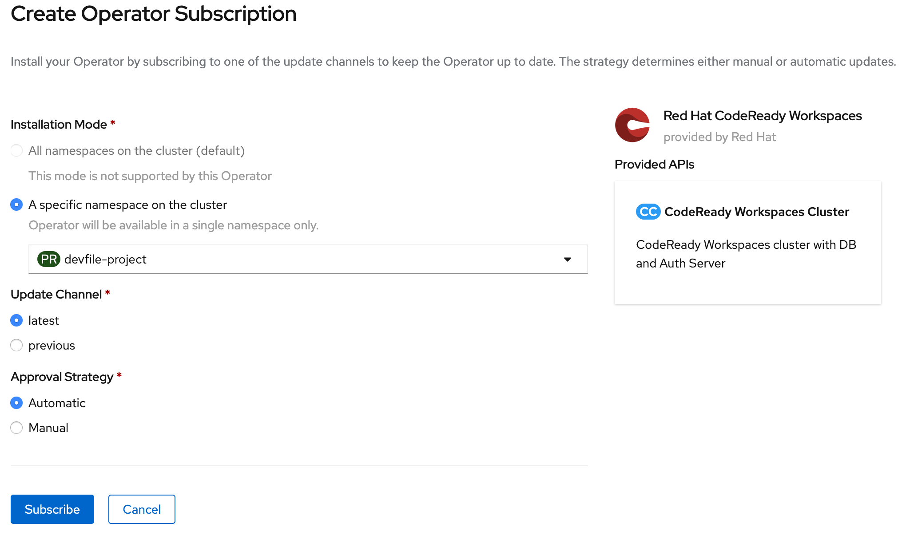
-
You should now be taken to the Installed Operators section. Wait until the CodeReady Workspaces operator is installed and then click on it.
-
From the CodeReady Workspaces operator details page, click on the Create Instance link.
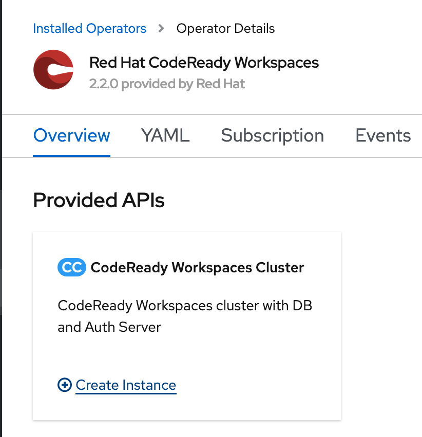
-
On the next page, leave everything as it is and click on the Create button at the bottom. This will begin the process of creating the necessary resources to bring up CodeReady Workspaces.
This process will take about 2-5 minutes to complete.
Creating a DevFile in CodeReady Workspaces¶
-
To launch CodeReady Workspaces, click on Networking on the left navigation bar and select Routes.
-
Look for the route named codeready and click on the link under the location column.
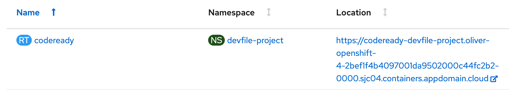
- You will then be taken to a log in page for CodeReady Workspaces. Since we are not using OpenShift's authentication, we will need to create a new log in. Click on the Register button at the botom of the dialog box.
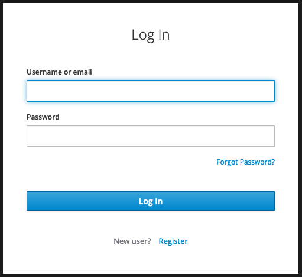
-
Enter the information in the registration form to create your account for CodeReady Workspaces. Feel free to use made up information as the only things that really matters are Username, Password, and Confirm Password fields. This information is only used for this instance of CodeReady Workspaces and will stay on the cluster. When done click on Register
You will then be taken to a page full of different workspaces. These workspaces contain tools and a development environment needed to start developing in those specific languages. These environment definitions are contained in what's called a Devfile. Let's create our own devfile and workspace.
-
Click on the Custom Workspace tab at the top of the page.
-
For Workspace Name enter Node-Example.
-
For the URL of devfile box in the Devfile section enter https://raw.githubusercontent.com/odrodrig/nodejs-ex/master/devfile.yaml and then click on Load devfile.
If you are unable to load the devfile from GitHub, here are the contents that you can copy and paste in:
apiVersion: 1.0.0
metadata:
generateName: Node-Example
components:
- mountSources: true
endpoints:
- name: nodejs
port: 3000
memoryLimit: 1024Mi
type: dockerimage
alias: runtime
image: 'quay.io/eclipse/che-nodejs10-ubi:nightly'
-
Click on Create and Open at the bottom of the page. The button might be hidden so you might need to scroll down to see it.
The workspace will take a few minutes to create so let's get our own copy of the code that we will be using for the rest of the lab.
-
In a new browser window, navigate to https://github.com/odrodrig/nodejs-ex and click on the Fork button at the top right of the page.
-
Once you are taken to your own repo, look for a green button that says Code on the right side of the page and click on it.
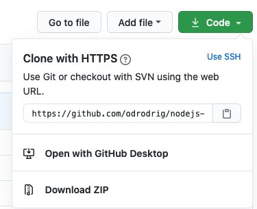
-
Ensure the box is titled Clone with HTTPS and copy the URL listed.
-
Go back to your browser tab with CodeReady Workspaces. Hopefully the workspace creation is finished by now, if not, just give it a few more minutes. When done, you should see be inside the code editor.
-
Go to View in the toolbar and select Find Command...
- In the new dialog that appears enter git and select Git: clone.
- When asked for a Repository URL enter the URL that you copied earlier from your git repository then press enter.
- Expand the project explorer by clicking on the icon that looks like 2 pieces of paper on the left toolbar. You should see the project that you cloned from GitHub.
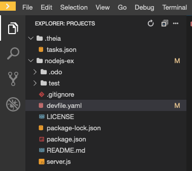
-
Click on the folder of the project that you cloned and select the devfile.yaml file. This is the file we used to create this workspace.
Let's break down this file to understand what it defined for us in the workshop.
- apiVersion - The version of the devfile API we are using. This will not usually change.
- metadata - Contains metadata for the workspace. Name is a required property.
- components - These are the additions to your workspace such as plugins and tools to assist with development or application components such as kubernetes objects or docker containers.
- In our imported devfile, we have one component which is the containerized runtime environment for our node application.
Another type of component that can be added is a che plugin, These plugins give us additional functionality in the CodeReady Workspaces IDE. - In our workspace let's add a typescript plugin that will give us some code completion, error checking, and more.
-
Click on View in the top toolbar and select Plugins. This will open up a new pane on the left side with a list of all plugins available to be installed.
-
In the search bar, enter typescript and click on the Install button for the result that appears.
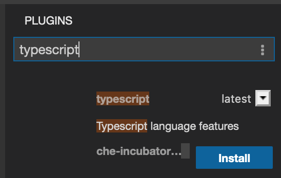
-
Then, click on the green message that appears that says Click here to apply changes, then click on Restart in the new dialog box that comes up.
You might be asked if you are sure you want to leave the page, click on Leave Page.
The workspace will be rebuilt with the new plugin installed.
-
Optionally, if you want to test out the plugin you can open up the server.js file, type in jiberish, and see the plugin highlight the mistake. As you can see in the screenshot below, the typescript plugin (ts) caught the syntax error. Be sure to delete any jiberish you do type out.
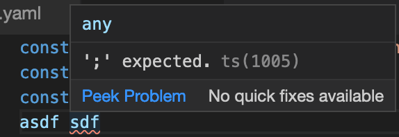
-
CodeReady Workspaces will maintain a devfile of the workspace's current configuration, including the plugin we just installed. To access this devfile, click on the yellow button at the top left of the page to expand the left menu. Then click on Workspaces.
-
Click on your workspace and then click on the Devfile tab.
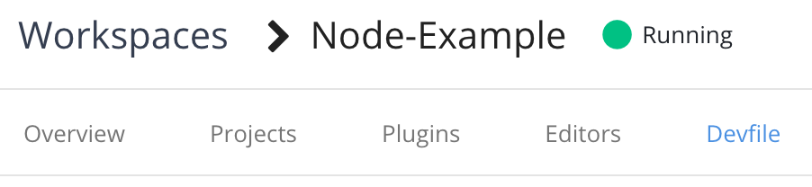
-
Copy the entire devfile contents.
-
Return to the workspace by clicking on the Node-Example workspace on the left menu.
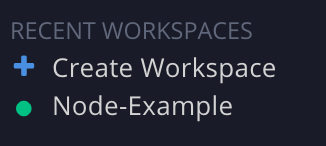
-
Then replace the contents of devfile.yaml with the contents you copied earlier by highlighting all the code and pasting in the devfile. You should see a new entry under components; the typescript che plugin.
Another property that you can add to devfiles is the projects array. This will bring in those project files into the environment. For our lab we will specify a git repo in this section so that it will be cloned in automatically when the environment is created.
-
In devfile.yaml add the following code block to the bottom:
projects:
- name: nodejs-ex
source:
location: 'https://github.com/odrodrig/nodejs-ex.git'
type: git
branch: master
Your new devfile should look like this:
metadata:
name: Node-Example
components:
- mountSources: true
endpoints:
- name: nodejs
port: 3000
memoryLimit: 1024Mi
type: dockerimage
alias: runtime
image: 'quay.io/eclipse/che-nodejs10-ubi:nightly'
- id: che-incubator/typescript/latest
type: chePlugin
apiVersion: 1.0.0
projects:
- name: nodejs-ex
source:
location: 'https://github.com/odrodrig/nodejs-ex.git'
type: git
branch: master
-
Then, edit the location property of the project in the devfile to be the git repository url that you copied earlier. You can get this URL from the tab that has GitHub open.
-
Next, let's add the commands array which will allow us to run commands to build and run the application within the runtime container. Add the following to the and of the devfile.
commands:
- name: devBuild
actions:
- workdir: '${CHE_PROJECTS_ROOT}/nodejs-ex/'
type: exec
command: npm install
component: runtime
- name: devRun
actions:
- workdir: '${CHE_PROJECTS_ROOT}/nodejs-ex/'
type: exec
command: nodemon app.js
component: runtime
Your devfile should now look like this:
metadata:
name: Node-Example
projects:
- name: nodejs-ex
source:
location: 'https://github.com/odrodrig/nodejs-ex.git'
type: git
branch: master
components:
- mountSources: true
endpoints:
- name: nodejs
port: 3000
memoryLimit: 1024Mi
type: dockerimage
alias: runtime
image: 'quay.io/eclipse/che-nodejs10-ubi:nightly'
- id: che-incubator/typescript/latest
type: chePlugin
apiVersion: 1.0.0
commands:
- name: devBuild
actions:
- workdir: '${CHE_PROJECTS_ROOT}/nodejs-ex/'
type: exec
command: npm install
component: runtime
- name: devRun
actions:
- workdir: '${CHE_PROJECTS_ROOT}/nodejs-ex/'
type: exec
command: nodemon app.js
component: runtime
-
Now we need to rebuild the workspace to include the commands we just added. Copy the contents of your new devfile.yaml then click on the yellow menu button at the top left and click on the Workspaces button again.
-
Next, click on your workspace and then click on the devfile tab.
-
Replace the existing devfile by highlighting the code and pasting in the code that you copied from your new devfile.
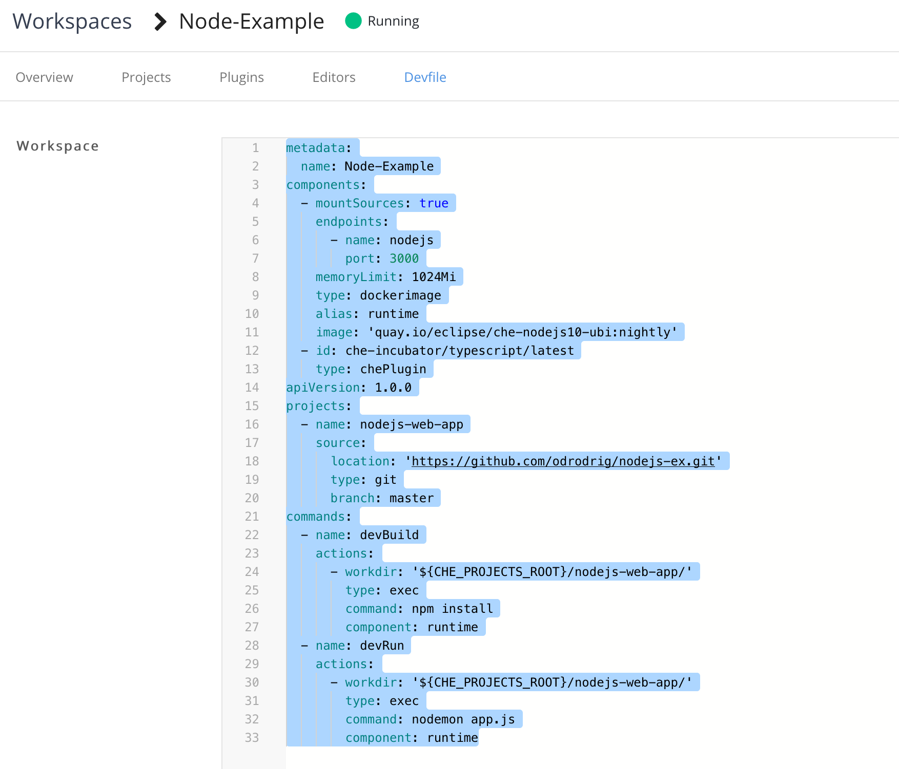
-
Then, click on the green Apply button at the bottom right. This will rebuild your workspace and take a few minutes.
-
Return to the workspace by clicking on the Node-Example workspace on the left menu.
-
Now we can run our application using the commands that we just added. Click on the Terminal button in the toolbar and select Run task.... This is where you can run commands specified in the devfile.
-
In the new dialog that appears select devBuild and then select Continue without scanning the task output. This will run npm install in the runtime container to download the necessary dependencies for our application.
You should notice a new tab appear at the bottom of the page with the build output.
-
Next, click on Terminal again, select Run task..., and this time select devRun. You can again click on Continue without scanning the tsk output when asked. This will run the application in the runtime container and allow us to test out it's functionality.
-
After running the application, you will get a pop up saying that A process is now listening on port 3000..... Click on the blue button to open the link to view your running application.
A new section should open up on the right side of the page which contains a preview of your application. By looking in the address bar you may also notice that this is actually running as a container on OpenShift. Any changes you make to the code will be automatically applied to the running application giving you an easy way to test changes out. Let's test this out.
-
In your project explorer on the left side of the page, click on the nodejs-ex folder to expand it and select server.js.
-
Then, go to line 55. You should see the following code there:
res.send('Hello from Node.js Starter Application with odo!');Go ahead and customize the message to say what ever you'd like or simply add something extra at the end of the string in between the single quotes. For example:
res.send('Hello from Node.js Starter Application with CodeReady Workspaces!');You should notice some output in the devRun tab at the bottom of the page. This means that your application has detected changes and is rebuilding.
-
Click on the refresh button in the application preview on the right side of the page to view your latest changes.
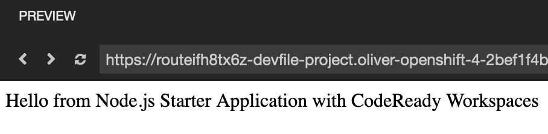
-
Now let's push our changes back to GitHub so that we can share this workspace with other developers. Click on the Source Control: git button on the left toolbar. It should look like the following:
-
You will be shown a list of changes we made since the project was cloned from github. Hover over the word Changes and you should see a + appear. Click on it to stage all of our changes for a commit.
-
Then click on the text box labeled Message and enter Updated devfile. Then click on the check mark right above the textbox to commit your changes.
-
Next, click on the 3-button menu in the Source Control panel and select push.
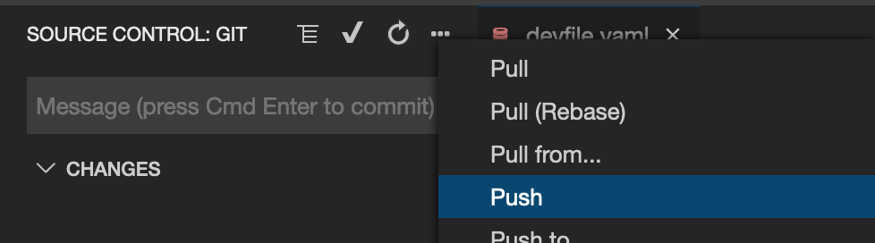
-
You will then get a prompt asking for your username. Enter your GitHub username and then press enter.
Then, you will be asked for your password. Enter your GitHub password and press enter.
With that done your new devfile has been pushed to GitHub and can be shared with other developers using CodeReady Workspaces.
EXTRA CREDIT: Local deployment of devfile with odo¶
In this section we will explore how we can take the devfile we created earlier and use it to develop our application locally.
This section requires a local terminal environment, Docker, and the odo cli.
- Then, we need to clone the repository locally. Run the following command in that terminal environment:
git clone https://github.com/odrodrig/nodejs-ex.git
cd nodejs-ex
-
In order to use devfiels with odo, we need to enable experimental features. Run the following:
bash odo preference set experimental true -
Next let's target docker as our deploytment target
bash odo preference set pushtarget docker -
Then, we will create a url which will allow us to expose our application to traffic. This is essentially creating a way for us to communicate with the application once we deploy it.
bash odo url create --port 3000 -
Now we can deploy the application to docker using odo push.
bash odo push -
Next, we need to find out what port our application was exposed on. Although we specified that the application listens on port 3000, that is not the port that will be exposed on the host machine. To find the correct port, run the following command:
bash docker psYou should see something like this:
bash CONTAINER ID IMAGE COMMAND CREATED STATUS PORTS NAMES 1623815845bf quay.io/eclipse/che-nodejs10-ubi:nightly "/opt/odo/bin/superv…" 27 seconds ago Up 26 seconds 8080/tcp, 127.0.0.1:51750->3000/tcp naughty_wu -
Look for the port binding under the PORTS column. It should be something like
8080/tcp, 127.0.0.1:51750->3000/tcp. the51750is the port that the application is exposed on. -
Navigate to the application by opening your browser and going to localhost:\<port> where port is the external port retrieved in the previous step. For example, my application is exposed at localhost:51750
-
You can see the same application that we started with in CodeReady Workspaces is deployed locally in Docker.
-
You can also run odo watch and have code changes propagated to the running container automatically.